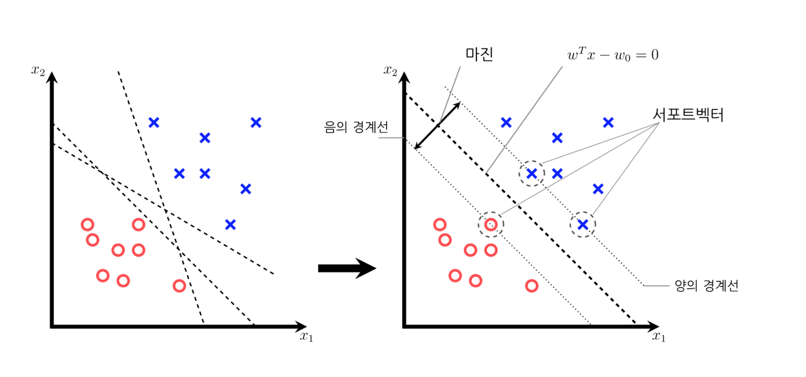
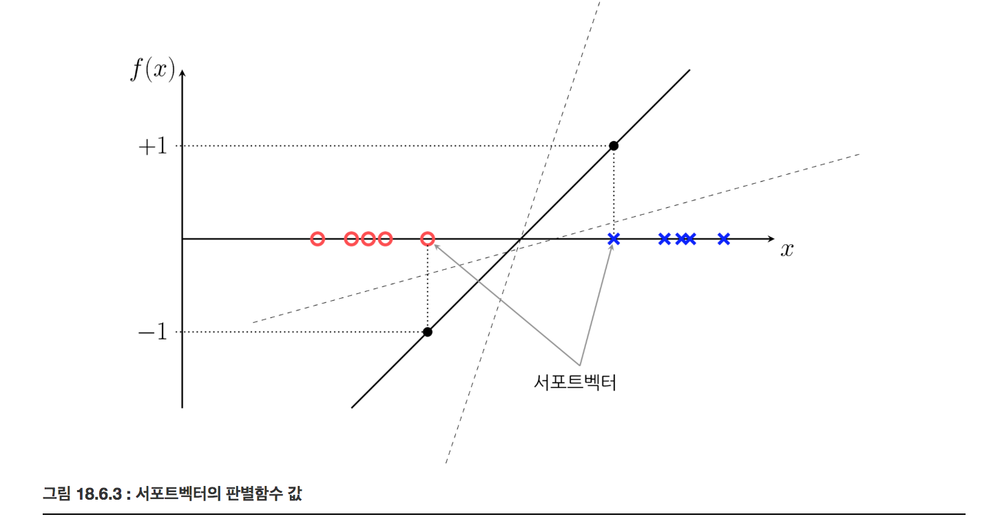
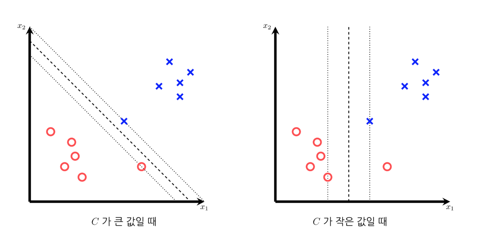

서포트 벡터 머신 Support Vector Machine (SVM)
Summary
- 서포트 벡터 머신은 퍼셉트론 기반의 모형에 가장 안정적인 판별 경계선을 찾기 위한 제한 조건을 추가한 모형이라고 볼 수 있습니다. 각각의 클래스에 속한 데이터 중에서 가장 경계선에 붙어 있는 최전방의 데이터들을 서포트 벡터라고 합니다. 판별 경계선과 서포트 벡터간의 거리의 합을 마진이라고 합니다. 마진 값이 클수록 경계선이 더 안정적입니다.
- 슬랙변수는 선형분리(linear separable)가 불가능한 경우에 개별적인 오차를 허용할 수 있다. 슬랙변수가 큰값일 때 마진이 작아지더라도 슬랙변수가 안생기도록 한다. 성능분산이 높아진다(데이터가 좀만 바껴도 값이 변한다.). 슬랙변수가 작은 값일 때 마진이 커지고 슬랙변수는 많아진다. 성능분산이 낮아진다. 슬랙변수는 서포트 벡터가 된다. 마진은 클수록 좋다.
- 장점은 분류문제와 예측문제 동시에 쓸 수 있습니다. 신경망 기법에 비해 과최적합 정도가 덜합니다. 예측의 정확도가 높고 사용하기 쉽습니다.
- 단점은 커널과 모델 파라미터를 조절하기 위한 테스트를 여러번 해봐야 최적화된 모형을 만들 수 있습니다. 구축이 오래걸리고 결과에 대한 설명력이 떨어집니다.
- SVM 에서는 현재의 차원에서 선형적으로 분류가 힘든 경우 데이터 차원을 고차원으로 확장한 후에 경계평면을 원리가 사용됩니다. 차원을 확장시켜 문제를 단순화 시키는 장점이 있습니다.
퍼셉트론은 가장 단순하고 빠른 판별 함수 기반 분류 모형이지만 판별 경계선(decision hyperplane)이 유니크하게 존재하지 않는다는 특징이 있다.
서포트 벡터 머신은 퍼셉트론 기반의 모형에 가장 안정적인 판별 경계선을 찾기 위한 제한 조건을 추가한 모형이라고 볼 수 있다.

서포트와 마진
판별함수모형에서 는 두 개의 값을 가진다. 데이터 중에서 값이 인 데이터를 , 값이 인 데이터를 라고 하자. 판별함수 모형에서 직선인 판별 함수 는 다음과 같은 수식으로 나타낼 수 있다.
판별함수 정의에 따라 값이 인 데이터 에 대한 판별함수 값은 양수가 되고, 값이 인 데이터 에 대한 판별함수 값은 음수가 된다.
값이 인 데이터 중에서 판별함수의 값이 가장 작은 데이터를 라고 하고 값이 -1인 데이터 중에서 판별함수의 값이 가장 큰 데이터를 라고 하자. 이 데이터들은 각각의 클래스에 속한 데이터 중에서 가장 경계선에 가까이 붙어있는 최전방(most front)의 데이터들이다. 이러한 데이터를 서포트(support) 또는 서포트 벡터(support vector) 라고 한다.
서포트에 대한 판별 함수의 값 값은 부호 조건만 지키면 어떤 값이 되어도 괜찮다.

이렇게 되면 모든 집합 데이터에 대해 판변함수의 값의 절대값이 1보다 커지므로 다음 부등식이 성립한다.
판별 경계선 과 점 사이의 거리는 다음과 같이 계산할 수 있다.
이 거리의 합을 마진(margin) 이라고 하며 마진값이 클수록 더 경계선이 안정적이라고 볼 수 있다. 위에서 정한 스케일링에 의해 마진은 다음과 같이 정리된다.
마진 값이 최대가 되는 경우는 즉, 가 최소가 되는 경우와 같다. 즉 다음과 같은 목적함수를 최소화하면 된다.
모든 표본 데이터에 대해 분류는 제대로 되어야 하므로 모든 데이터에 대해 다음 조건을 만족한다. 위에서 스케일링을 사용하여 모든 데이터에 대해 가 1보다 크거나 -1보다 작게 만들었다는 점을 이용한다.
라그랑주 승수법을 사용하면 최소화 목적함수를 다음과 같이 고치면 된다.
- 은 각각의 부등식에 대한 라그랑주 승수이다.
KKT(Karush-Kuhn-Tucker) 조건에 따르면 부등식 제한 조건이 있는 경우에는 등식 제한조건을 가지는 라그랑스 승수 방법과 비슷하지만 번째 부등식이 있으나 없으나 답이 같은 경우에는 라그랑지 승수의 값이 이 된다.
이 경우는 판별함수의 값 이 -1보다 작거나 1보다 큰 경우이다.
학습 데이터 중에서 최전방 데이터인 서포트 벡터가 아닌 모든 데이터들에 대해서는 이 조건이 만족되므로 서포트 벡터가 아닌 데이터는 라그랑지 승수가 0이라는 것을 알 수 있다.
듀얼 형식
최적화 조건은 목적함수 을 로 미분한 값이 0이 되어야 하는 것이다.
두 수식을 원래의 목적함수에 대입하여 을 없애면 다음과 같다.
는 다음 조건을 만족한다.
이 문제는 를 구하는 문제가 아니라 만을 구하는 문제로 바뀌었으므로 듀얼형식(dual form) 이라고 한다. 듀얼형식으로 바꾸면 수치적으로 박스(box)제한 조건이 있는 이차프로그래밍(QP:quadratic programming) 문제가 되므로 원래의 문제보다는 효율적으로 풀 수 있다.
듀얼형식 문제를 풀어 함수 를 최소화하는 를 구하면 예측 모형을 다음과 같이 쓸 수 있다.
구하는 식
라그랑주 승수 값이 0 즉, 이면 해당 데이터는 예측 모형, 즉 계산에 아무런 기여를 하지 않으므로 위 식을 실제로는 다음과 같다.
- 는 와 사이의 (코사인)유사도, 는 와 사이의 (코사인)유사도이므로 결국 두 서포트 벡터와의 유사도를 측정해서 값이 큰 쪽으로 판별하게 된다.
슬랙변수
만약 데이터가 직선인 판별 경계썬으로 나누어지지 않는 즉, 선형분리(linear separable)가 불가능한 경우에는 다음과 같이 슬랙변수(slack variable)를 사용하여 개별적인 오차를 허용할 수 있다.
- 양수인 슬랙변수 (데이터가 파고든 정도)를 사용한 조건
- 모든 슬랙변수는 0보다 같거나 크다.
최적화 목적함수
- 항은 슬랙 변수의 합이 너무 커지지 않도록 제한하는 역할을 한다.

- C가 큰값일 때 마진이 작아지더라도 슬랙변수가 안생기도록 한다. 성능분산이 높아진다(데이터가 좀만 바껴도 값이 변한다.)
- C가 작은 값일 때 마진이 커지고 슬랙변수는 많아진다. 성능분산이 낮아진다.
- 슬랙변수는 서포트 벡터가 된다. 마진은 클수록 좋다.
- 간단한 이미지 분석할 때 SVC 사용한다.